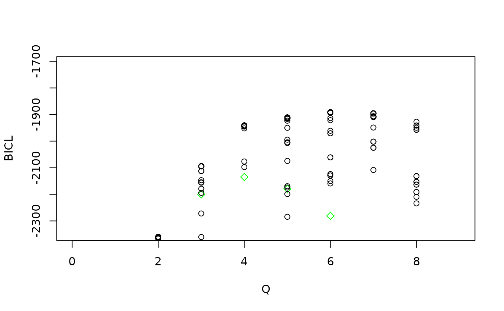

Tutorial on food webs
tutorial.Rmd
global_opts = list(nb_cores = 1L,
nb_models = 5L,
nb_init = 10L,
depth = 2L,
verbosity = 2, spectral_init = FALSE,
Q_max = 8L, plot_details = 1)
set.seed(1234)
res_fw_iid <- estimate_colSBM(netlist = foodwebs[1:3],
colsbm_model = "iid",
directed = TRUE,
net_id = names(foodwebs)[1:3],
nb_run = 3L,
global_opts = global_opts)
#> 0/1:
#> 0/1:
#> 0/2:
#> 0/2:
#> 0/3:
#> 0/3:
#> Please install the progress-package in order to get a progress bar.
#> 0/1: Starting optimization of 3 SBMsStarting initialization from SBMs fit.
#> 0/1: ==== Finish Burn in for networks M_Martins NC_Cooper NC_Herlzier ===
#> 0/1: ICL : -2733 -2370 -2183 -1978 -2070 -2064 -2035 -2276
#> 0/1: ICL Cl : -2733 -2368 -2175 -1976 -2060 -2050 -2016 -2273
#> 0/1: ==== Starting pass number 1 for networks M_Martins NC_Cooper NC_Herlzier ===
#> 0/1: ICL : -2733 -2370 -2183 -1978 -2070 -2064 -2035 -2276
#> 0/1: ICL Cl : -2733 -2368 -2175 -1976 -2060 -2050 -2016 -2273
#> 0/1: 2 : -2368.365 -- FALSE 3 : -2114.924 -- TRUE 4 : -1976.098 -- FALSE 5 : -1971.33 -- TRUE 6 : -2008.02 -- TRUE 7 : -2016.042 -- FALSE 6 : -1977.331 -- TRUE 5 : -1971.33 -- FALSE 4 : -1973.238 -- TRUE 3 : -2114.924 -- FALSE ==== Starting pass number 2 for networks M_Martins NC_Cooper NC_Herlzier ===
#> 0/1: ICL : -2733 -2370 -2115 -1976 -1975 -1984 -2035 -2276
#> 0/1: ICL Cl : -2733 -2368 -2115 -1973 -1971 -1977 -2016 -2273
#> 0/1: 4 : -1973.238 -- FALSE 5 : -1970.001 -- TRUE 6 : -1977.331 -- FALSE 7 : -2016.042 -- FALSE 6 : -1971.898 -- TRUE 5 : -1968.35 -- TRUE 4 : -1973.238 -- FALSE 3 : -2114.924 -- FALSE ==== Starting pass number 3 for networks M_Martins NC_Cooper NC_Herlzier ===
#> 0/1: ICL : -2733 -2370 -2115 -1976 -1975 -1981 -2035 -2276
#> 0/1: ICL Cl : -2733 -2368 -2115 -1973 -1968 -1972 -2016 -2273
#> 0/1: 4 : -1973.238 -- FALSE 5 : -1968.35 -- FALSE 6 : -1971.898 -- FALSE 7 : -2016.042 -- FALSE 6 : -1971.822 -- TRUE 5 : -1968.35 -- FALSE 4 : -1973.238 -- FALSE 3 : -2114.924 -- FALSE
#> 0/2: Starting optimization of 3 SBMsStarting initialization from SBMs fit.
#> 0/2: ==== Finish Burn in for networks M_Martins NC_Cooper NC_Herlzier ===
#> 0/2: ICL : -2733 -2367 -2290 -1978 -2106 -2067 -2042 -2118
#> 0/2: ICL Cl : -2733 -2366 -2279 -1976 -2090 -2032 -2034 -2099
#> 0/2: ==== Starting pass number 1 for networks M_Martins NC_Cooper NC_Herlzier ===
#> 0/2: ICL : -2733 -2367 -2290 -1978 -2106 -2067 -2042 -2118
#> 0/2: ICL Cl : -2733 -2366 -2279 -1976 -2090 -2032 -2034 -2099
#> 0/2: 2 : -2365.927 -- FALSE 3 : -2114.591 -- TRUE 4 : -1976.098 -- FALSE 5 : -1968.772 -- TRUE 6 : -1975.136 -- TRUE 7 : -2022.825 -- TRUE 6 : -1975.136 -- FALSE 5 : -1968.772 -- FALSE 4 : -1973.563 -- TRUE 3 : -2114.591 -- FALSE ==== Starting pass number 2 for networks M_Martins NC_Cooper NC_Herlzier ===
#> 0/2: ICL : -2733 -2367 -2115 -1976 -1970 -1979 -2028 -2118
#> 0/2: ICL Cl : -2733 -2366 -2115 -1974 -1969 -1975 -2023 -2099
#> 0/2: 4 : -1973.563 -- FALSE 5 : -1968.772 -- FALSE 6 : -1975.136 -- FALSE 7 : -2011.313 -- TRUE 6 : -1975.136 -- FALSE 5 : -1968.772 -- FALSE 4 : -1973.563 -- FALSE 3 : -2114.591 -- FALSE
#> 0/3: Starting optimization of 3 SBMsStarting initialization from SBMs fit.
#> 0/3: ==== Finish Burn in for networks M_Martins NC_Cooper NC_Herlzier ===
#> 0/3: ICL : -2733 -2367 -2300 -1979 -1992 -2040 -2028 -2166
#> 0/3: ICL Cl : -2733 -2366 -2295 -1977 -1983 -2038 -2021 -2151
#> 0/3: ==== Starting pass number 1 for networks M_Martins NC_Cooper NC_Herlzier ===
#> 0/3: ICL : -2733 -2367 -2300 -1979 -1992 -2040 -2028 -2166
#> 0/3: ICL Cl : -2733 -2366 -2295 -1977 -1983 -2038 -2021 -2151
#> 0/3: 2 : -2365.927 -- FALSE 3 : -2114.533 -- TRUE 4 : -1977.237 -- FALSE 5 : -1973.039 -- TRUE 6 : -1992.662 -- TRUE 7 : -2020.568 -- FALSE 6 : -1970.787 -- TRUE 5 : -1971.26 -- TRUE 4 : -1976.339 -- TRUE ==== Starting pass number 2 for networks M_Martins NC_Cooper NC_Herlzier ===
#> 0/3: ICL : -2733 -2367 -2115 -1981 -1973 -1974 -2028 -2166
#> 0/3: ICL Cl : -2733 -2366 -2115 -1976 -1971 -1971 -2021 -2151
#> 0/3: 5 : -1971.26 -- FALSE 6 : -1970.787 -- FALSE 7 : -2006.42 -- TRUE 8 : -2068.175 -- TRUE 7 : -2006.42 -- FALSE 6 : -1970.787 -- FALSE 5 : -1971.26 -- FALSE 4 : -1976.339 -- FALSE
#> Warning in pmax(self$ICL_clustering, rep(-Inf, Q_max)): 0/1: an argument will be
#> fractionally recycled
#> Warning in pmax(self$ICL_clustering, rep(-Inf, Q_max)): 0/1: an argument will be
#> fractionally recycled
#> Warning in pmax(self$ICL_clustering, rep(-Inf, Q_max)): 0/1: an argument will be
#> fractionally recycled
#> Warning in pmax(self$ICL_clustering, rep(-Inf, Q_max)): 0/2: an argument will be
#> fractionally recycled
#> Warning in pmax(self$ICL_clustering, rep(-Inf, Q_max)): 0/2: an argument will be
#> fractionally recycled
#> Warning in pmax(self$ICL_clustering, rep(-Inf, Q_max)): 0/3: an argument will be
#> fractionally recycled
res_fw_iid$ICL_clustering
#> [1] -2732.899 -2365.927 -2114.533 -1973.238 -1968.350 -1970.787 -2006.420
#> [8] -2068.175
plot(res_fw_iid$best_fit, type = "meso", mixture = FALSE, ord = c(3,4,5,2,1))
#> New names:
#> • `` -> `...1`
#> • `` -> `...2`
#> • `` -> `...3`
plot(res_fw_iid$best_fit, type = "block", net_id = 1) +
plot(res_fw_iid$best_fit, type = "block", net_id = 2) +
plot(res_fw_iid$best_fit, type = "block", net_id = 3)